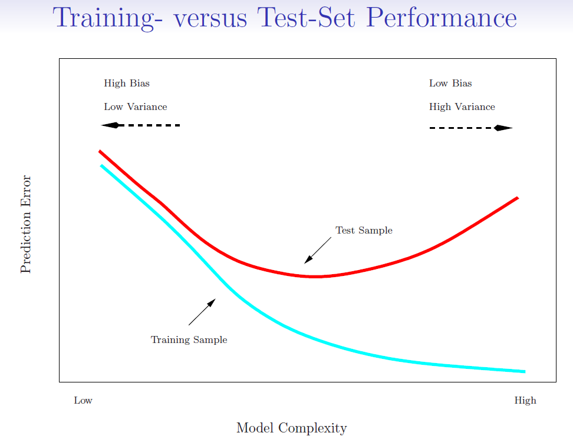
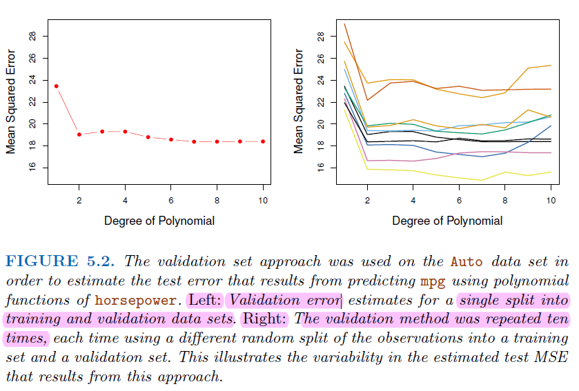
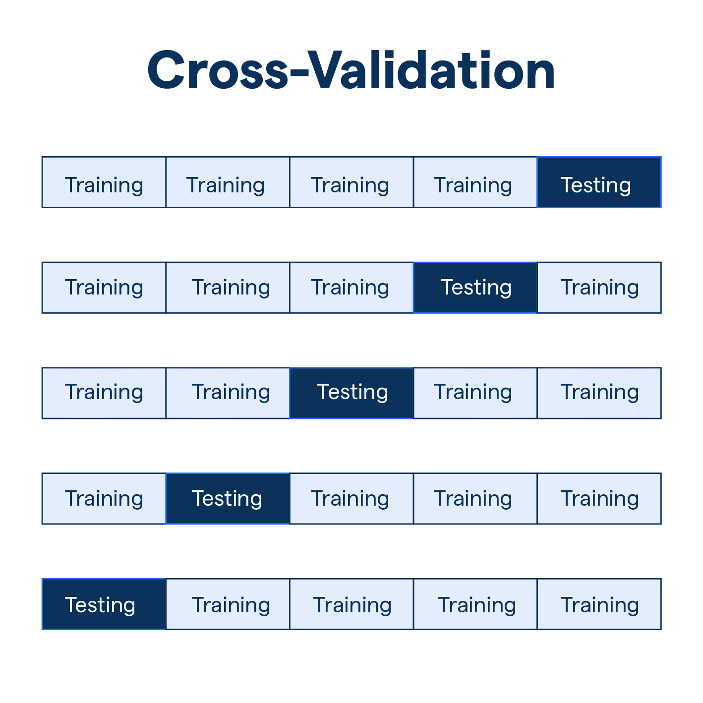
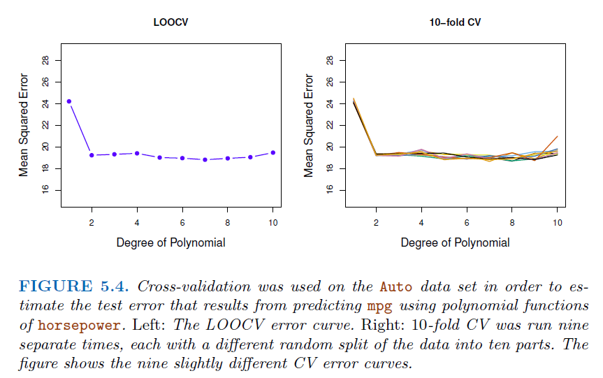
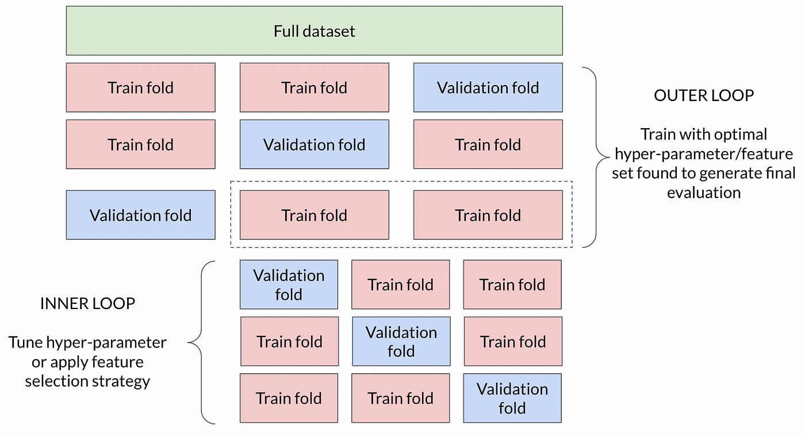
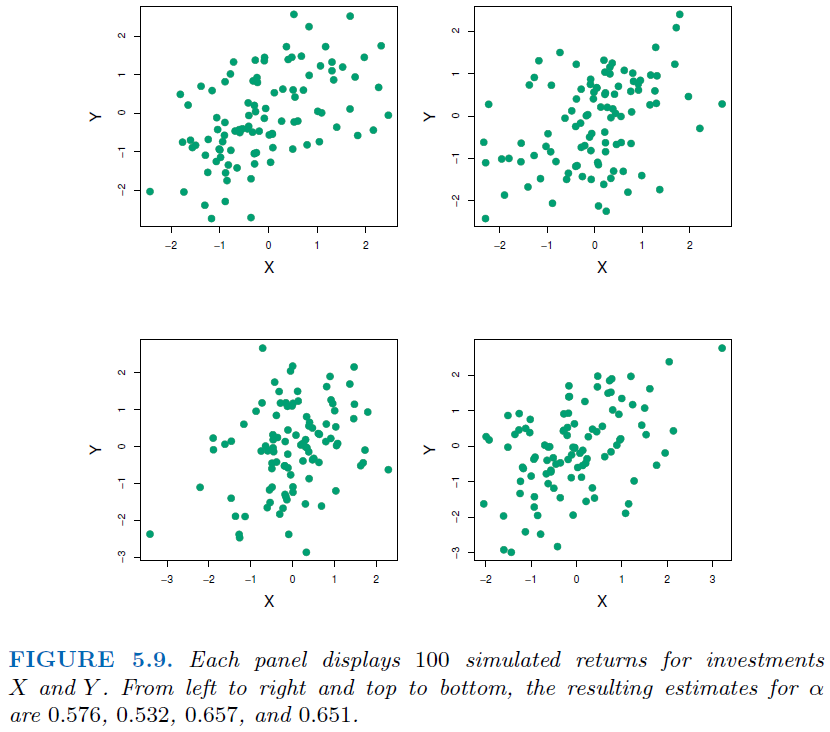
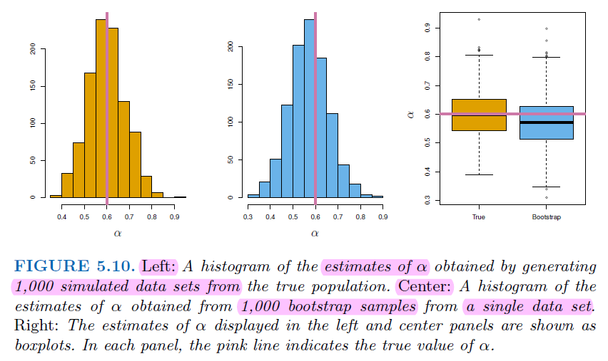
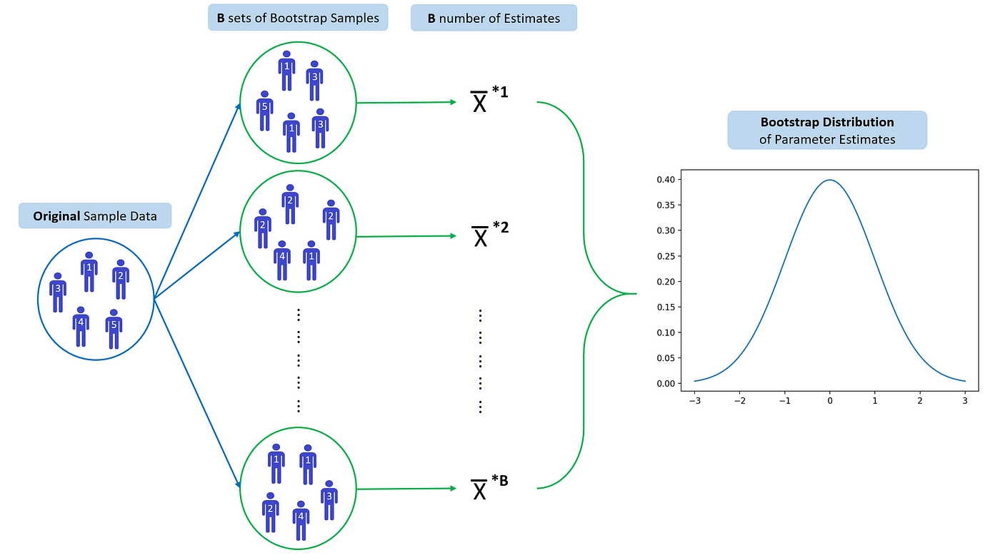
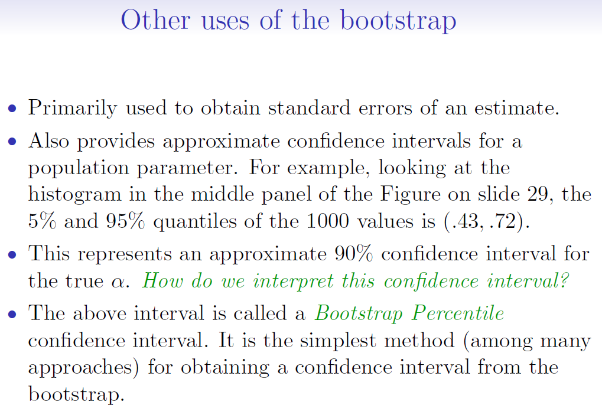

4. Sampling#
Sometimes we need to test the model performance, but we can not use the same data as training and testing. therefore we need sampling strategies.
Training error (blue line): Training error, also known as in-sample error, is the error that occurs when a model is applied to the data it was trained on.
Testing error (red line): Testing error, or out-of-sample error, is the error that occurs when the model is applied to a new dataset that it hasn’t seen before, often a validation or test set.

4.1. Estimate Testing error#
When we use training error to estimate testing error, we often get a underestimated result. Some methods make a mathematical adjustment to the training error rate in order to estimate the test error rate.
\(-2ln(L)\) use the same way as RSS, in linear regression, \(-2log(L) = RSS/\sigma^2\)
4.1.1. AIC (Akaike Information Criterion)#
\(k\) is the number of parameters in the model
\(L\) is the maximum value of the likelihood function for the model
Normally, we assume errors are normally distributed (offsets between expectation and observation)
4.1.2. BIC (Bayesian Information Criterion)#
\(n\) is the number of observations
The other terms are as defined for AIC
when \(n > 7\), \(BIC\) put more penalty than \(AIC\)
4.1.3. Example#
Want to compare linear vs higher-order polynomial terms in a linear regression

import numpy as np
import statsmodels.api as sm
# Generate some data
np.random.seed(0)
X = np.random.uniform(-10, 10, 100)
Y = 3 - 2*X + X**2 + np.random.normal(0, 2, 100)
# Fit models of varying complexity
results = {}
for degree in range(1, 6):
features = np.column_stack([X**i for i in range(1, degree + 1)])
features = sm.add_constant(features)
model = sm.OLS(Y, features).fit()
results[degree] = {'model': model, 'AIC': model.aic, 'BIC': model.bic}
# Find the best model according to AIC and BIC
best_by_aic = min(results, key=lambda k: results[k]['AIC'])
best_by_bic = min(results, key=lambda k: results[k]['BIC'])
print(f'Best model by AIC is of degree {best_by_aic} with AIC = {results[best_by_aic]["AIC"]}')
print(f'Best model by BIC is of degree {best_by_bic} with BIC = {results[best_by_bic]["BIC"]}')
Best model by AIC is of degree 2 with AIC = 425.7373213865948
Best model by BIC is of degree 2 with BIC = 433.55283194455905
4.2. Cross Validation#
In normal validation approach, only a subset of the observation are used to fit the model
The validation error may tend to overestimate the test error for the model fit on the entire data set
For some shrinkage method (e.g. Lasso and Ridge regression), it’s hard to find the number of predictors \(k\)
Cross validation provide a direct way to test error, instead of using the variance of error \(\sigma^2\)
4.2.1. K-fold Cross Validation#
Let the \(K\) parts be \(C_1,C_2,...,C_K\), where \(C_k\) denotes the indices of the observations in part \(k\). There’re \(n_k\) observations in part k, where \(n_k=n/K\)
Compute (regression)
\[ CV_{(K)}=\sum_{k=1}^K\frac{n_k}{n}MSE_k \]For Classification, Compute * Where \(Err_k = \sum_{i\in C_k}I(y_i\neq \hat{y_i})/n_k\) $\( CV_{(K)}=\sum_{k=1}^K\frac{n_k}{n}Err_k \)$
basically the weighted sum of \(MSE_k\) by number of observations in \(k\)
Since each training set is only \((K-1)/K\), the estimates of prediction error will typically be biased upward.
\(K=5\) or \(10\) provides a good compromise for bias-variance tradeoff.

4.2.2. Example using Cross Validation#

4.2.3. Common mistakes in Cross Validation#

4.2.3.1. Feature selection before Cross validation#
Performing feature selection before cross-validation can lead to data leakage and overfitting, as you’re peeking at the entire dataset to select features based on their correlation with the target variable.
This can result in overly optimistic performance estimates.
4.2.3.2. Example#
We randomly generate 50 predictors with different mean and variance normal distribution, and random label Y
We select 5 predictors having the largest correlation with the radom label
Then we put this 5 predictors into logistic regression to get CV Score
Theoretically, we will get CV score around 50% since the independent simulation, but result gives us much higher score
from sklearn.model_selection import cross_val_score
from sklearn.linear_model import LogisticRegression
from scipy.stats import pearsonr
# Set random seed for reproducibility
np.random.seed(5)
# Generate X with 50 random arrays following normal distribution with different mean and variance
X = np.random.normal(loc=np.random.uniform(-10, 10, size=50), scale=np.random.uniform(1, 5, size=50), size=(100, 50))
# Generate y as random labels from uniform distribution
y = np.random.randint(2, size=100)
# Step 2: Select the 5 features most correlated with the outcome
## This step is wrong since model have seen
## all labels to get most correlated predictors
correlations = np.array([pearsonr(X[:, i], y)[0] for i in range(X.shape[1])])
top_five_indices = np.argsort(np.abs(correlations))[-5:]
# Step 3: Perform cross-validation using only the selected features
selected_X = X[:, top_five_indices]
model = LogisticRegression()
# Use cross-validation to estimate the test error
cv_scores = cross_val_score(model, selected_X, y, cv=5)
# The mean cross-validated score can be misleadingly high due to feature selection bias
mean_cv_score = np.mean(cv_scores)
print("Cross-validation scores:", cv_scores)
print(f'Mean CV score: {mean_cv_score}')
Cross-validation scores: [0.55 0.7 0.45 0.75 0.75]
Mean CV score: 0.64
4.3. Bootstrap#
The
bootstrapis a flexible and powerful statistical tool that can be used to quantify the uncertainty associated with a given estimator or statistical learning method.For example, it provides the estimate of standard error of a coefficient, or a confidence interval for that coefficient.
4.3.1. Example for Bootstrap#
We want to invest our money in two financial assets that yield returns of X and Y
We will invest a fraction \(\alpha\) of our money in \(X\), and \(1-\alpha\) in Y
We wish to choose \(\alpha\) to minimize the total risk, or variance (\(Var(\alpha X+(1-\alpha)Y)\)), of our investment. $\( Var(\alpha X+(1-\alpha)Y) = \alpha ^2Var(X) + (1-\alpha)^2 Var(Y) + 2\alpha(1-\alpha) CoV(XY) \)\( \)\( \frac{\partial f}{\partial \alpha} = 2\alpha Var(x) - 2(1-\alpha) Var(Y) + 2(1-\alpha) CoV(XY) - 2\alpha(XY) \)$
Let \(\frac{\partial f}{\partial \alpha} = 0\), we get $\( \alpha = \frac{Var(Y)-Cov(XY)}{Var(X)+Var(Y)-2CoV(XY)} \)$
We can estimate \(Var(X), Var(Y)\) and \(CoV(XY)\) using sampling / simulation


4.3.2. Why we need Bootstrap#
In real word analysis, we cannot generate new samples from the original population.
Bootstrap allows us to mimic the process of obtaining new data sets. So we can estimate the variability of our estimate without generating additional samples
Each bootstrap datasets is created by sampling with replacement, and is the same size as the original dataset.
There is about a two-thirds overlap in a bootstrap sample with the original data

Bootstrap requires data being independent to each other, some data like time series are not applicable for Bootstrap
For time series, we can divide data by blocks, then use block to do bootstrap

4.3.3. Bootstrap Implementation Example#
from sklearn.utils import resample
import numpy as np
# Original dataset
data = [0.1, 0.2, 0.3, 0.4, 0.5, 0.6]
# prepare bootstrap sample
boot = resample(data, replace=True, n_samples=len(data), random_state=1)
print('Bootstrap Sample:', boot)
# out of bag observations
oob = [x for x in data if x not in boot]
print('OOB Sample:', oob)
# Bootstrap estimates of the mean
means = []
for i in range(1000):
boot = resample(data, replace=True, n_samples=len(data))
means.append(np.mean(boot))
print("Original Mean:", np.mean(data))
print("Bootstrap Mean:", np.mean(means))
print("Bootstrap Standard Error:", np.std(means))